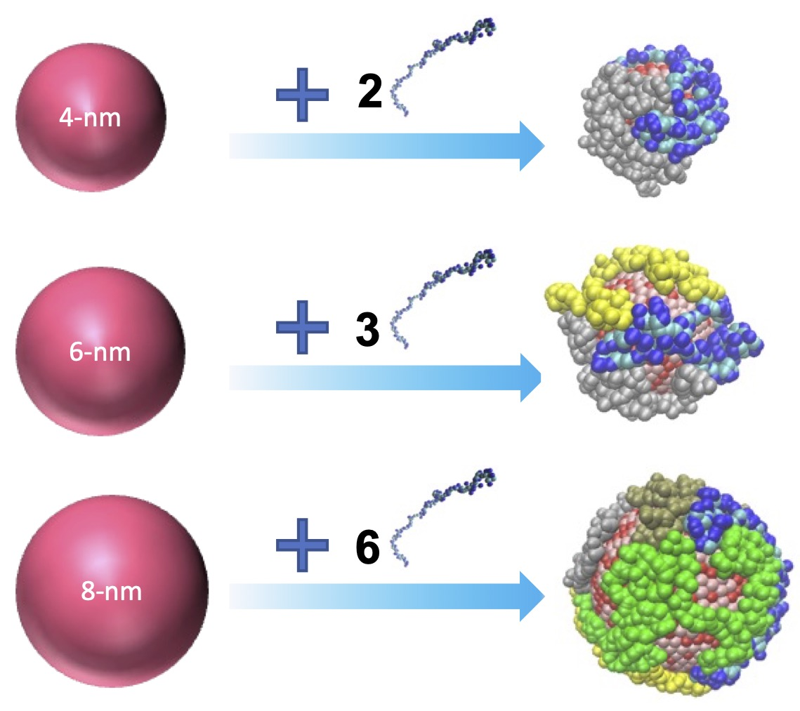
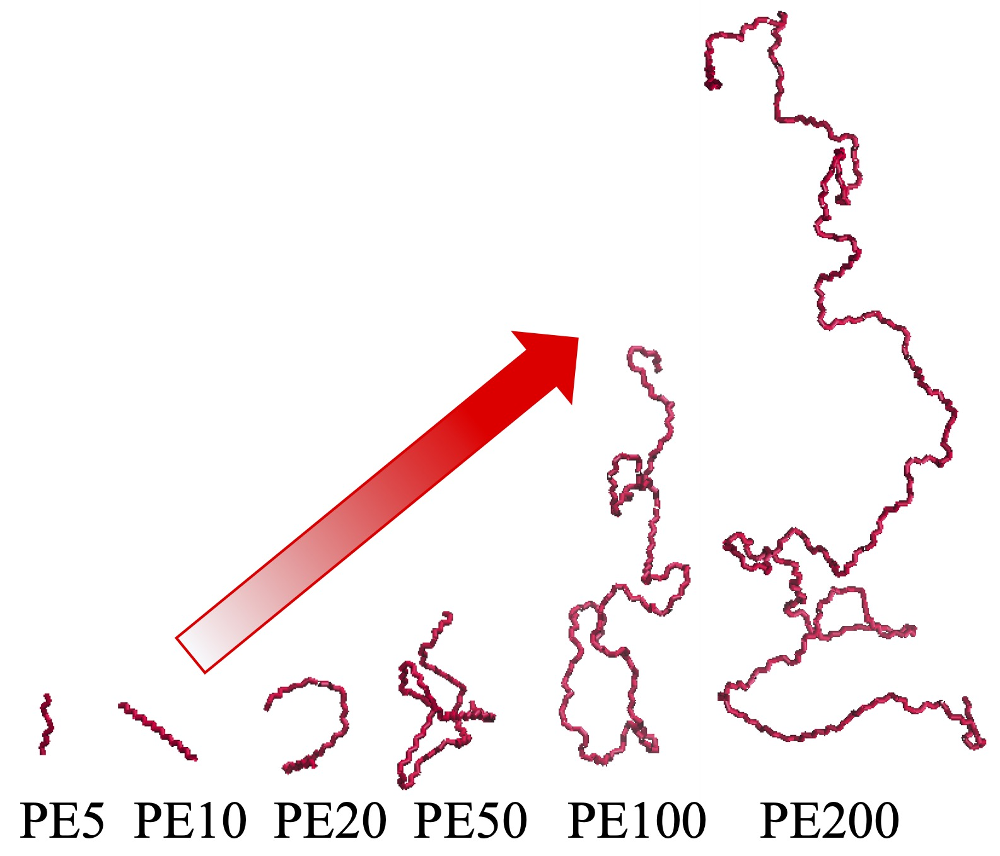

Previous research papers
Go Back
Sustainable Nanotechnology
Polymer-Nanoparticle Network
- Yinong Zhao, Xingfei Wei, and Rigoberto Hernandez. "Neuromorphic Computing Primitives Using Polymer-Networked Nanoparticles." ACS J. Phys. Chem. C 128, 21164−-21172 (2024).

- Xingfei Wei, Ewa Harazinska, Yinong Zhao, and Rigoberto Hernandez. "Networked Nanoparticle Arrays for Autonomous Computing." In 2024 IEEE 24th International Conference on Nanotechnology (NANO) (2024).

- Xingfei Wei, Ewa Harazinska, and Rigoberto Hernandez. "Control of Structure and Dynamics in Polymer-Networked Engineered Nanoparticle Arrays by Electric Fields." Phys. Rev. Research 5, L022057 (2023).
- Xingfei Wei, Ewa Harazinska, Yinong Zhao, and Rigoberto Hernandez. "Thermal Transport Through Polymer Linked Gold Nanoparticles." ACS J. Phys. Chem. C 126, 18511--18519 (2022).

- Chi Chen, Xingfei Wei, Molly Parsons, Jiajia Guo, James Banal, Yinong Zhao, Madelyn N. Scott, Gabriela S. Schlau-Cohen, Rigoberto Hernandez, and Mark Bathe. "Nanoscale 3D Spatial Addressing and Valence Control of Quantum Dots using Wireframe DNA Origami." Nat. Comm. 13, 1--15 (2022).

- Xingfei Wei, Chi Chen, Yinong Zhao, Ewa Harazinska, Mark Bathe, and Rigoberto Hernandez. "Molecular Structure of Single-Stranded DNA on the ZnS Surface of Quantum Dots." ACS Nano 16, 6666--6675 (2022).

- Xingfei Wei, Yinong Zhao, Yi Zhuang, and Rigoberto Hernandez. "Building Blocks for Autonomous Computing Materials: Dimers, Trimers and Tetramers." J. Chem. Phys. 155, 154704 (2021).

- Xingfei Wei, Yinong Zhao, Yi Zhuang, and Rigoberto Hernandez. "Engineered Nanoparticle Network Models for Autonomous Computing." J. Chem. Phys. 154, 214702 (2021).

Transport Process at Interface
Polymer Thermal Conductivity
- Xingfei Wei and Tengfei Luo. "Effect of Side-Chain π-π Stacking on the Thermal Conductivity Switching in Azobenzene Polymers: A Molecular Dynamics Simulation Study." Phys. Chem. Chem. Phys. 24, 10272--10279 (2022).

- Xingfei Wei, Zihan Huang, Stephen Koch, Massimiliano Zamengo, Yichen Deng, Marilyn L. Minus, Junko Morikawa, Ruilan Guo, and Tengfei Luo. "Thermal Conductivity of Pentiptycene-based Poly(o-hydroxyimide) Copolymers: A Study via Integrated Experiments and Simulations." ACS Appl. Polym. Mater. 3, 2979--2987 (2021).
- Xingfei Wei, Zhi Wang, Zhiting Tian, and Tengfei Luo. "Thermal Transport in Polymers: A Review." J. Heat Transfer 143, 072101 (2021).
- Xingfei Wei, Ruimin Ma, and Tengfei Luo. "Thermal Conductivity of Polyelectrolytes with Different Counterions." ACS J. Phys. Chem. C. 124, 4483--4488 (2020).
- Xingfei Wei and Tengfei Luo. "Chain Length Effect on Thermal Transport in Amorphous Polymers and A Structure-Thermal Conductivity Relation." Phys. Chem. Chem. Phys. 21, 15523--15530 (2019).

- Xingfei Wei and Tengfei Luo. "Role of Ionization in Thermal Transport of Solid Polyelectrolytes." ACS J. Phys. Chem. C. 123, 12659--12665 (2019).

- Xingfei Wei and Tengfei Luo. "The Effect of Block Ratio on the Thermal Conductivity of Amorphous Polyethylene-Polypropylene (PE-PP) Diblock Copolymers." Phys. Chem. Chem. Phys. 20, 20534--20539 (2018).
- Xingfei Wei, Teng Zhang, and Tengfei Luo. "Chain Conformation-Dependent Thermal Conductivity of Amorphous Polymer Blends: the Impact of Inter- and Intra-Chain Interactions." Phys. Chem. Chem. Phys. 18, 32146--32154 (2016).

Surface Metallization
- Vinith Bejugam, Xingfei Wei, and D. K. Roper. "Reductive Spectrophotometry of Divalent Tin Sensitization on Soda Lime Glass." Appl. Surf. Sci. 376, 43--51 (2016).
- Xingfei Wei, G. Jang, and D. K. Roper. "Spectrophotometric Method for the Determination of Tin(II) by Redox Reaction using 3,3',5,5'-tetramethylbenzidine dihydrochloride and N-bromosuccinimide." J. Anal. Chem. 70, 566--572 (2015).
- Xingfei Wei and D. K. Roper. "Tin Sensitization for Electroless Plating Review." J. Electrochem. Soc. 161(5), D235--D242 (2014).
- M. Lisunova, Justin Norman, Xingfei Wei, Samir Jenkins, Jingyi Chen, and D. K. Roper. "Aqueous Dispersion of Plasmonic Hollow Metal Nanoparticles." Mater. Lett. 117, 241--243 (2014).
- M. Lisunova, Xingfei Wei, D. DeJarnette, G. T. Forcherio, K. Berry, P. Blake, and D. K. Roper. "Photothermal Response of Plasmonic Nanoconglomerates in Assembled Films by Electroless Plating." RSC Adv. 4, 20894--20901 (2014).
Go Back